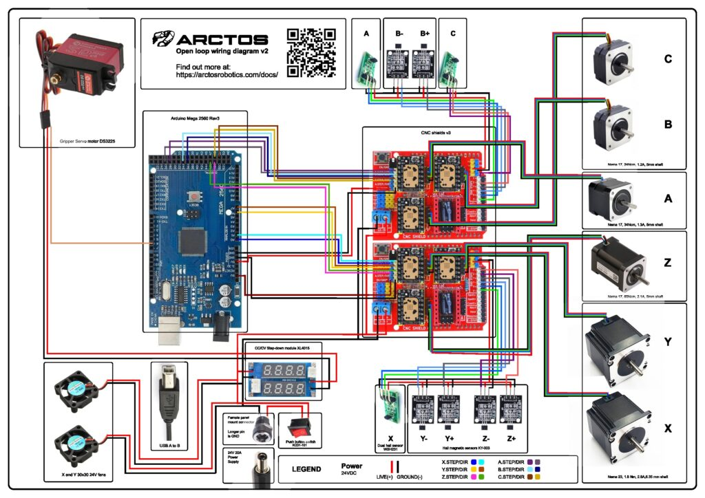
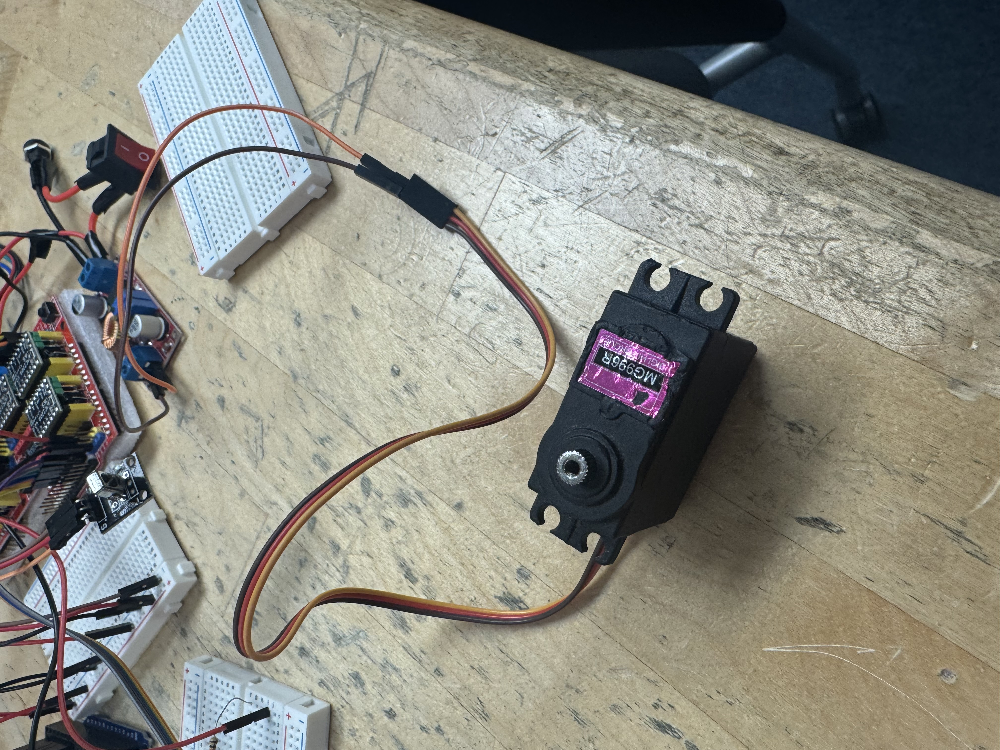
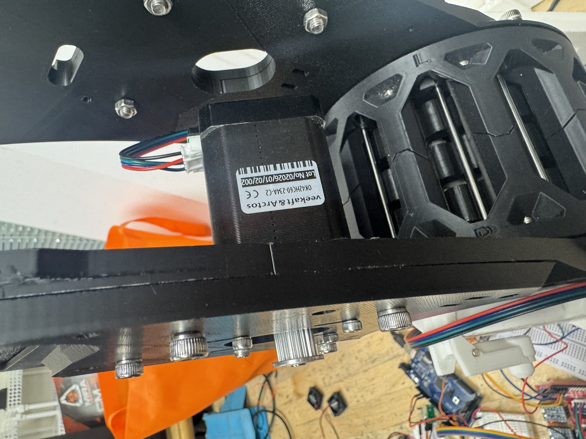
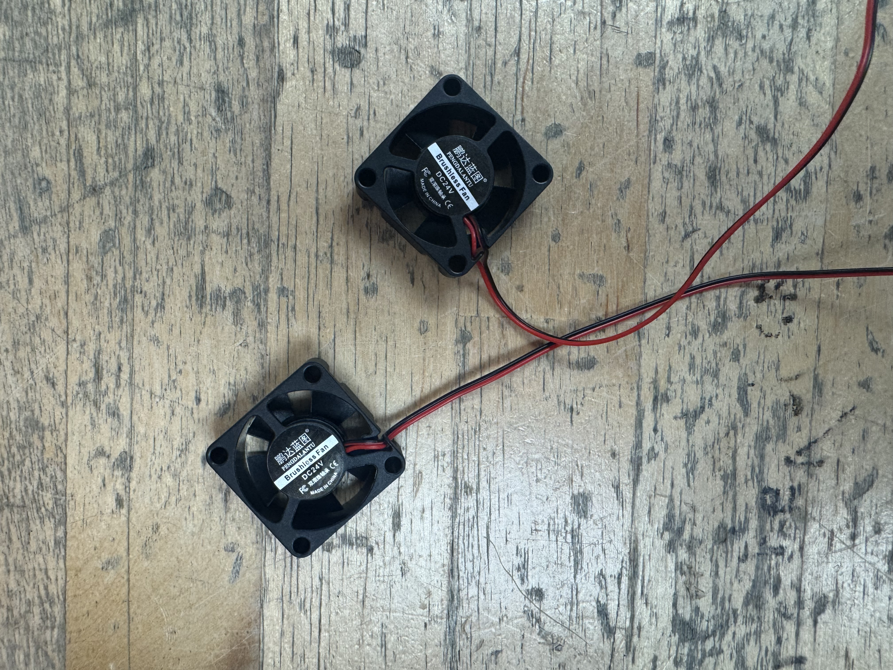
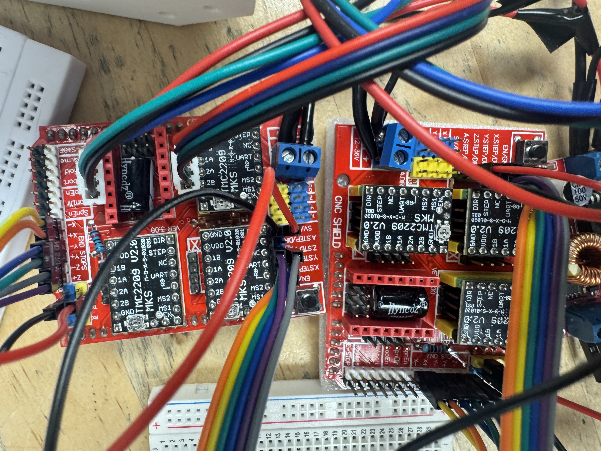
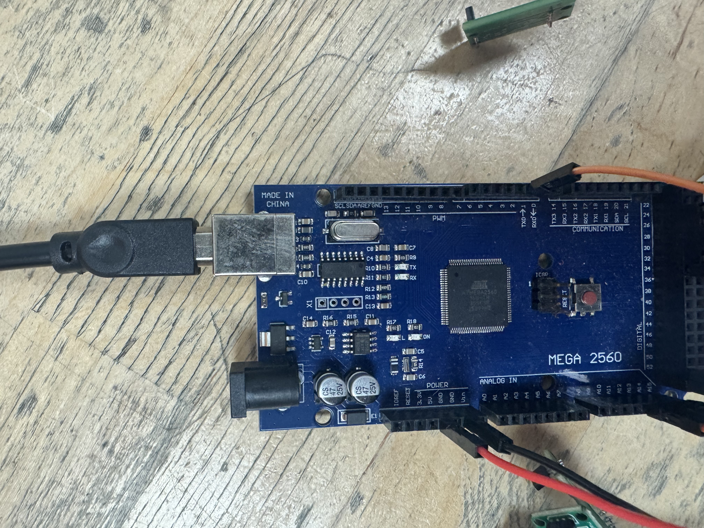
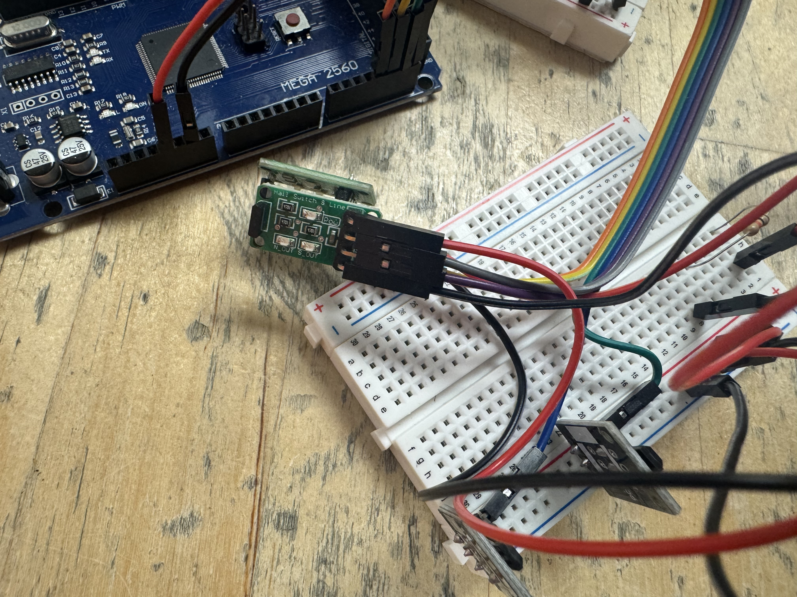

6-Axis Robot Arm
Systems Integration & Power Electronics
System Schematics
01. Raw Schematics (As Instructed)

02. Cooked Schematics (Custom Improvements)

Key Hardware Components

25kg Servo

NEMA Stepper

Cooling System

CNC Driver

Microcontroller
Step Down (24V -> 8V)

Motion Control
Technical Challenge & Debugging Roadmap
Servo Current Inrush
The 25kg servo motor draws significant current during peak torque, causing logic rail instability.
Proposed Idea: Use a 1000uF / 16V capacitor for decoupling to buffer the power rail.
Buck Converter Polar Sensitivity
The XL4016 input is polarized; accidental reverse polarity will cause catastrophic component failure.
Proposed Idea: Integrate a protection diode at the input stage to prevent blow-ups.
Over-Current Safety (15A+)
System current may exceed 15A during multi-axis movement, risking heat damage or fire.
Proposed Idea: Add an inline fuse to the primary power rail to protect the entire system.
Technical Source Code
Review the firmware and system logic on GitHub.